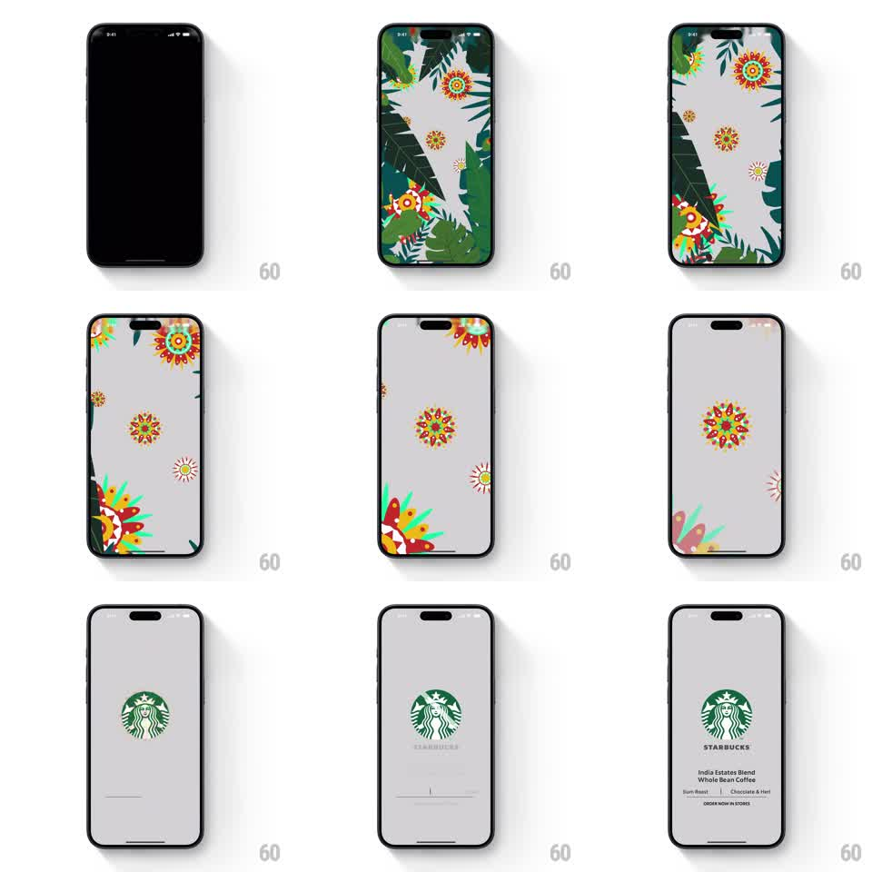

Media
Frame-by-frame

Rebuild this animation 1:1: Starbucks' India Estates splash - spinning mandalas and sliding botanical leaves fill the screen, then part to a clean light stage where the green siren logo and the India Estates Blend details stagger in.

Rebuild this animation 1:1: Starbucks' India Estates splash - spinning mandalas and sliding botanical leaves fill the screen, then part to a clean light stage where the green siren logo and the India Estates Blend details stagger in. ## Integration Integration: stack-agnostic spec - springs given as stiffness/damping, timed motions as duration + curve; map every value to your framework and animation library of choice. ## Scene From black: a dense Indian-themed illustration - colorful mandalas (orange, red, teal florals) scattered over dark tropical leaves on a light field. End state: clean light-gray screen, the green Starbucks siren at center, the STARBUCKS wordmark, then "India Estates Blend Whole Bean Coffee", a "Sun-Roast | Chocolate & Herbal" tasting line, and "ORDER NOW IN STORES". ## Motion spec Pattern: botanical build-up, parting reveal, staggered brand lockup. - The illustration fades in from black (400ms); mandalas spin slowly in place (12s/rev, alternating directions) and leaves slide in from the edges (spring ~260/22, staggered 80ms). - After a beat (1.4s), the leaves slide back out to the edges and off (500ms, ease-in) while the mandalas shrink and fade toward the center (400ms, scale -> 0.3). - The siren logo scales in (0.6 -> 1, spring ~280/18) as the field clears to light gray (background crossfade 400ms). - Wordmark fades in under the logo (250ms), then the product name, tasting line, and order link stagger down (fade + rise 8pt, 250ms each, 120ms apart). ## Calibration - Mandala spin is slow and decorative - the parting slide is the actual transition. - The logo lands only after the field is clean; never over the illustration. ## Reduced motion Illustration crossfades to the logo stage (400ms); all texts fade together. ## Don't miss - The mandala palette stays saturated Indian-folk; the end stage is neutral light gray. - The final text stack is centered, small, and precise - no buttons, just the order line.